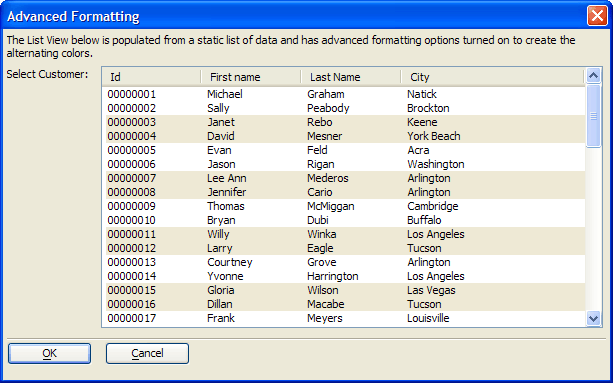

ListView with Advanced Formatting
The designer created this dialog with the List View Genie.

The most interesting thing about this list view is the formatting that causes the colored stripes.
To create this effect the designer:
Clicked
 in the Display Options > Define Advanced Formatting field to display the Advanced Formatting dialog box.
in the Display Options > Define Advanced Formatting field to display the Advanced Formatting dialog box.Displayed the Background Color tab.
Entered "2" into the Number of rows in each band text box.
Selected "Dirty White" in the Even Band Background Color list.
See Also
Limitations
Desktop applications only.